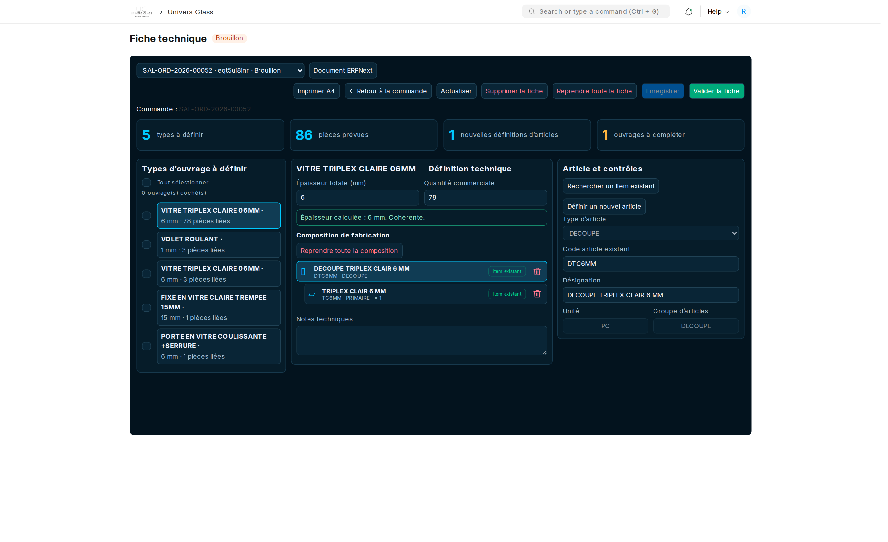
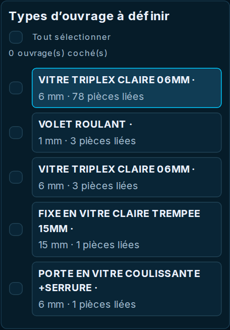
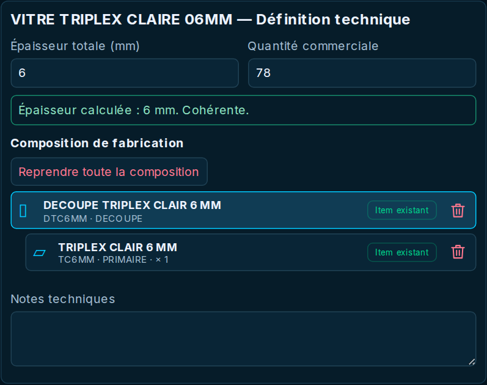
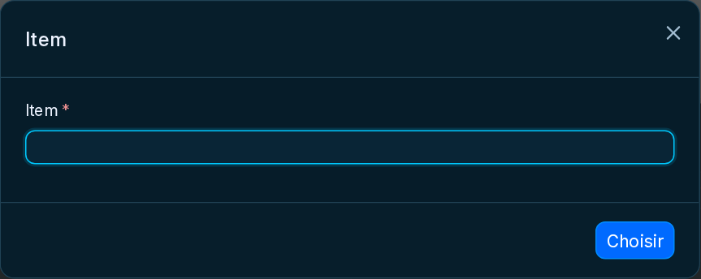
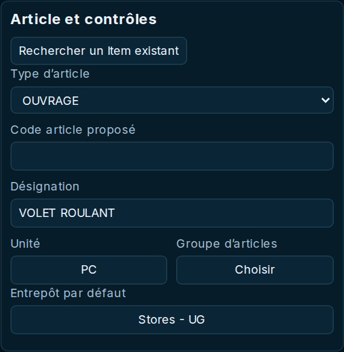
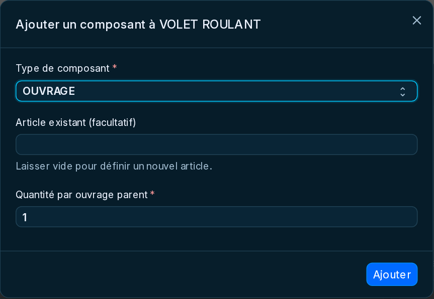
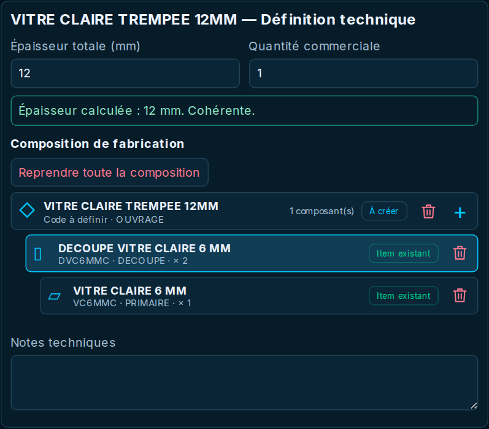
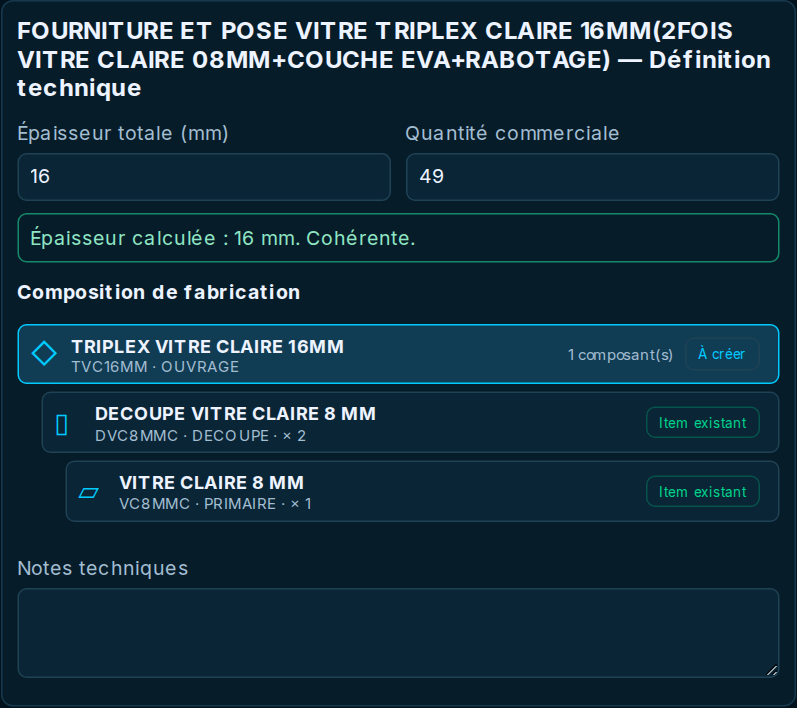

La fiche
technique
Définir les articles et leur composition, contrôler les épaisseurs et transmettre une commande prête à fabriquer.

Pour les responsables de la préparation et de la validation technique des découpes et ouvrages, en circuits A et B.
20 captures prises sur le site de production. Les exemples de saisie et de copie n’ont entraîné aucun enregistrement ni validation de document métier.
Retrouver la fiche à préparer
La fiche technique décrit comment fabriquer les découpes et ouvrages d’une commande. Elle traduit les types commerciaux en articles et composants de fabrication.
- Ouvrir la tâche de préparation technique reçue après validation de la commande, ou accéder à Univers Glass → Fiche technique.
- Dans le sélecteur, choisir la fiche correspondant à la commande. L’adresse de la page est https://fimaci.f.frappe.cloud/app/technical-study.
- Vérifier le numéro de commande et l’état de la fiche avant toute saisie.
- Utiliser Retour à la commande pour consulter le besoin commercial, ou Document ERPNext pour ouvrir le document complet.
Le responsable technique travaille sur les fiches auxquelles son compte donne accès. Une fiche déjà validée se consulte ; elle ne se modifie plus comme un brouillon.
Comprendre les zones et les indicateurs
| Zone | Utilisation |
|---|---|
| À gauche : types | Choisir le type dont on prépare la définition ; les cases servent à partager une composition. |
| Au centre : définition | Lire l’épaisseur attendue, la quantité commerciale et l’arbre des composants. |
| À droite : article et contrôles | Consulter ou renseigner le composant sélectionné dans l’arbre. |
| Types à définir | Nombre de définitions techniques attendues dans cette fiche. |
| Pièces prévues | Quantités commerciales du dossier ; ce n’est pas le nombre de composants d’un ouvrage. |
| Nouvelles définitions | Articles marqués À créer dans les compositions. Ils ne sont pas encore tous créés dans le catalogue. |
| Ouvrages à compléter | Indicateur de préparation. Les contrôles complets s’exécutent aussi à la validation. |
Définir un type, garder les dimensions des pièces

- Cliquer sur le nom d’un type dans le volet de gauche pour afficher sa définition.
- Lire son épaisseur et sa quantité commerciale au centre.
- Définir la composition commune à ce type ; ne pas recopier chaque dimension de pièce dans cette définition.
- Passer au type suivant et vérifier qu’aucun type n’est oublié.
Deux types peuvent porter une désignation proche et rester distincts. Vérifier le type sélectionné et les pièces liées avant de lui appliquer une définition.
Sur une ancienne fiche traitée par ouvrages, l’écran peut encore présenter les dimensions individuelles. Ne pas confondre ce parcours historique avec les fiches actuelles par types.
Lire une composition de fabrication

| Type de composant | Sens |
|---|---|
| OUVRAGE | Article assemblé à partir de découpes ou d’autres ouvrages. Les composants apparaissent en dessous, décalés vers la droite. |
| DECOUPE | Pièce à découper ; elle doit avoir exactement une matière PRIMAIRE. |
| PRIMAIRE | Plaque de matière utilisée pour la découpe, avec son format nominal et son épaisseur. Elle n’a pas de composants enfants. |
| ESPACE | Couche d’espacement exprimée en millimètres, sans consommation de matière stockée. |
| × quantité | Nombre de composants nécessaires pour un parent, et non quantité totale de la commande. |
Réutiliser un article existant
- Sélectionner le composant concerné dans l’arbre.
- Cliquer sur Rechercher un Item existant.
- Rechercher le code correspondant au type attendu : OUVRAGE, DECOUPE ou PRIMAIRE.
- Choisir l’article, puis vérifier la composition chargée, l’unité et l’épaisseur.
- Enregistrer la fiche pour conserver ce choix.

Voir les champs protégés d’un article existant. La quantité d’utilisation d’un composant se vérifie dans sa composition parente.

Compléter un nouvel article et sa matière
- Sélectionner l’article à définir. S’il est existant et qu’une variante est nécessaire, utiliser Définir un nouvel article.
- Choisir le type d’article, puis renseigner un code proposé et une désignation claire.
- Choisir l’unité et un groupe d’articles terminal approprié. L’unité de l’article final doit correspondre à celle attendue commercialement.
- Contrôler l’entrepôt proposé. Pour les vitres de la société Univers Glass, le défaut est Stores - UG.
- Pour une matière PRIMAIRE, renseigner son format nominal : longueur, hauteur et épaisseur positives en millimètres.


Ajouter des composants et un ESPACE
- Sur l’OUVRAGE parent, cliquer sur le petit + de sa carte.
- Dans la fenêtre, choisir OUVRAGE, DECOUPE ou ESPACE.
- Pour un ouvrage ou une découpe, choisir un article existant ou laisser ce choix vide pour définir un nouvel article.
- Saisir une quantité entière positive par parent, puis cliquer sur Ajouter.
- Pour une nouvelle DECOUPE sans matière, sélectionner la découpe et utiliser + Matière primaire, puis choisir ou définir la plaque source.

Voir un exemple non soumis d’ESPACE de 2 mm. Si l’ajout transforme un ouvrage existant, l’écran peut demander de créer une variante avant la modification.

Contrôler les épaisseurs et les quantités
Le contrôle sous les champs compare l’épaisseur attendue du type et celle calculée à partir des composants. Les quantités par parent interviennent dans ce calcul.

Corriger la composition, les quantités ou la matière en cas d’écart. Ne pas modifier artificiellement les valeurs commerciales pour masquer une incohérence technique.
Appliquer une définition à plusieurs types
- Préparer et vérifier la composition du type qui servira de source. Le sélectionner en cliquant sur son nom.
- Cocher dans le volet de gauche les types auxquels appliquer cette composition. Dans le parcours par types, ils doivent avoir la même épaisseur que la source.
- Vérifier le nom affiché à côté de Source et les cases cochées.
- Cliquer sur Appliquer cette définition aux … ouvrage(s) coché(s).
- Relire chaque type destinataire, puis Enregistrer la fiche pour conserver la copie.

Enregistrer puis valider la fiche
- Passer en revue tous les types : article final, composants, quantités par parent, matières, unités, groupes et dépôt.
- Vérifier que les épaisseurs sont cohérentes. Ajouter les notes techniques utiles.
- Cliquer sur Enregistrer et attendre la fin de l’opération. Un enregistrement conserve le brouillon sans autoriser la fabrication.
- Si vous avez le droit de validation, cliquer sur Valider la fiche, relire la confirmation puis confirmer.
- Vérifier que la fiche est indiquée Validée. Les lignes de fabrication concernées peuvent alors être proposées au cockpit atelier.

Une fiche ne peut pas être validée si le besoin source a changé ou si sa définition est incomplète. Lire le message et résoudre le point bloquant avant de recommencer.
Actualiser, reprendre ou annuler
| Action | Utilisation |
|---|---|
| Actualiser | Recharger la version enregistrée. En cas de saisie non enregistrée, vérifier ce que vous voulez conserver avant de recharger. |
| Reprendre toute la composition | Effacer la composition du type sélectionné après confirmation, puis la redéfinir. Enregistrer ensuite la fiche. |
| Reprendre toute la fiche | Repartir sur toutes les définitions du brouillon après confirmation ; les notes sont aussi réinitialisées. |
| Corbeille / Retirer cet article et ses enfants | Retirer le composant sélectionné et sa branche après confirmation. Relire l’arbre avant enregistrement. |
| Supprimer la fiche | Action définitive sur une fiche admissible non validée, soumise aux droits. Une nouvelle préparation se fait depuis le document source. |
| Annuler la fiche | Possible seulement si les contrôles de traçabilité l’autorisent. Une fiche utilisée en fabrication peut être protégée. |
| Imprimer A4 | Imprimer la version enregistrée. Enregistrer les modifications avant de lancer l’impression. |
Résoudre les blocages avant transmission à l’atelier
| Message ou situation | Que vérifier |
|---|---|
| La fiche n’apparaît pas | Commande validée, présence d’articles à fabriquer, bonne fiche sélectionnée et droits du compte. Une vente directe seule ne nécessite pas de fiche. |
| Ouvrages à compléter | Sélectionner chaque type : code, désignation, unité, groupe, dépôt, matière primaire et composants requis. |
| Épaisseur incompatible | Recalculer verres et ESPACE en tenant compte des quantités par parent ; comparer à l’épaisseur du type. |
| Définition différente de l’Item existant | Recharger cet article ou définir une variante. Ne pas modifier silencieusement une définition existante. |
| Matière primaire manquante | Une DECOUPE doit avoir exactement une PRIMAIRE ; vérifier son format et son épaisseur. |
| Unité incompatible | Vérifier l’unité attendue sur le type commercial et celle de l’article final. |
| La fiche / les besoins ont changé | Actualiser et comparer la commande source. Si le besoin a changé, faire préparer une fiche correspondant à la version actuelle. |
| Article absent du cockpit atelier | Vérifier que la fiche est bien validée, puis actualiser le cockpit. La validation technique ne crée pas du stock disponible. |
| Annulation refusée | Contrôler les fabrications et documents liés avec le responsable avant de poursuivre. |
Avant de transmettre à l’atelier
Confirmer la commande, la validation de la fiche, la composition de chaque type et les matières prévues. Les dimensions des pièces doivent être correctes sur les lignes de commande.